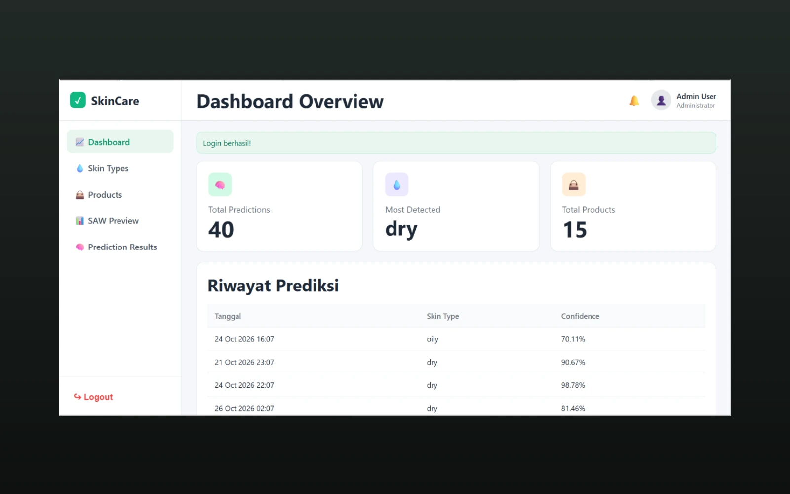
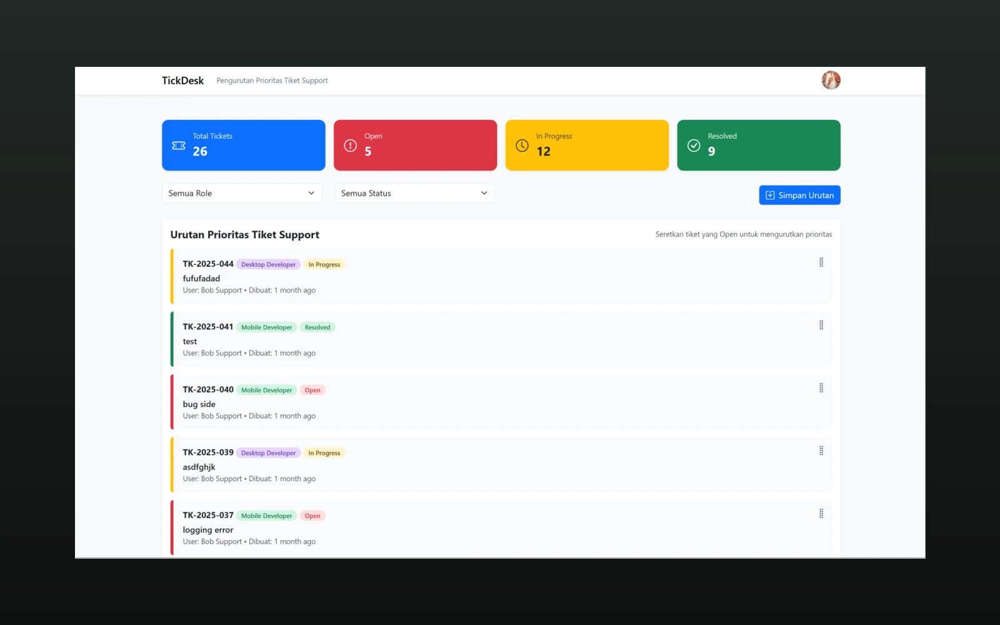
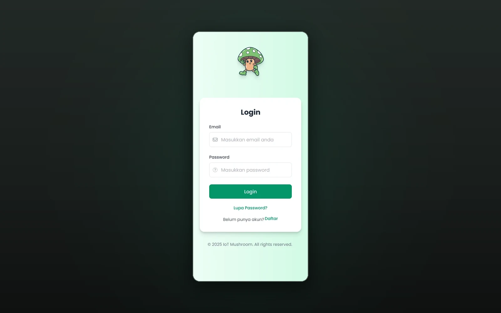
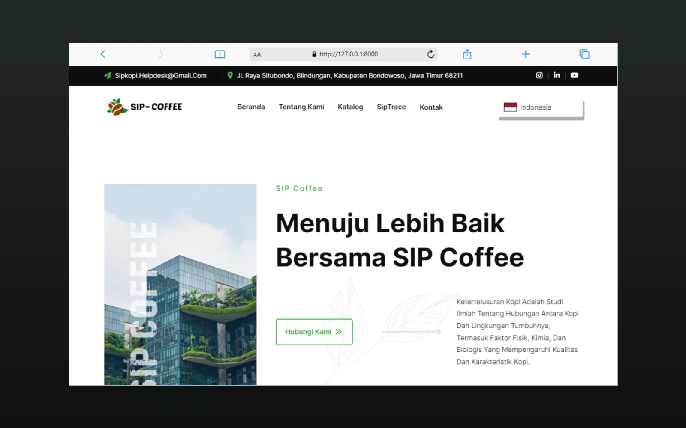
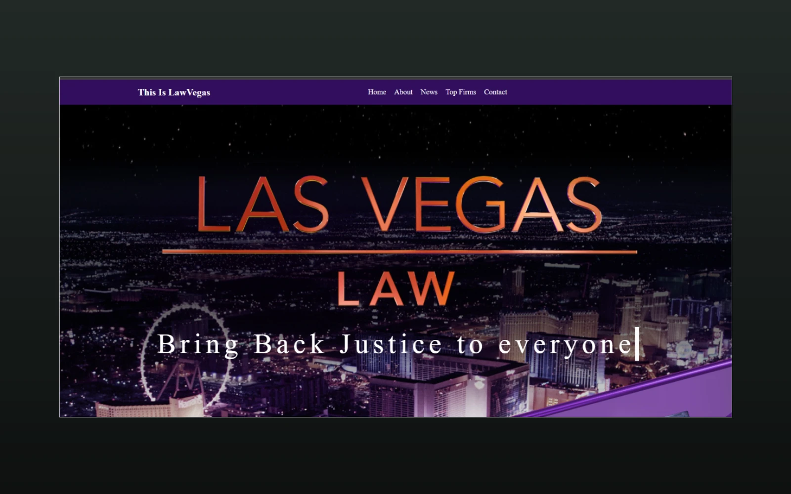
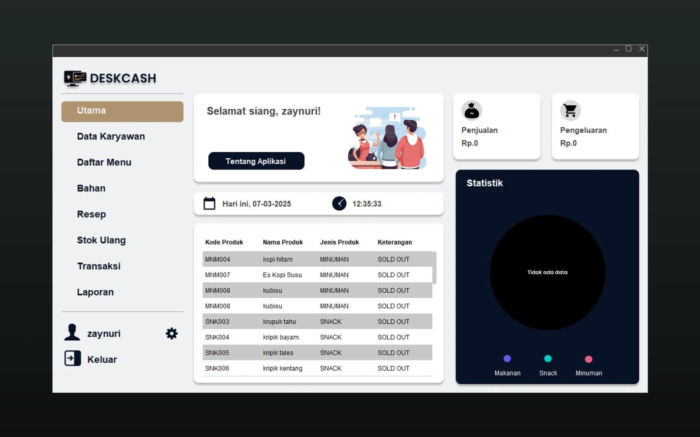
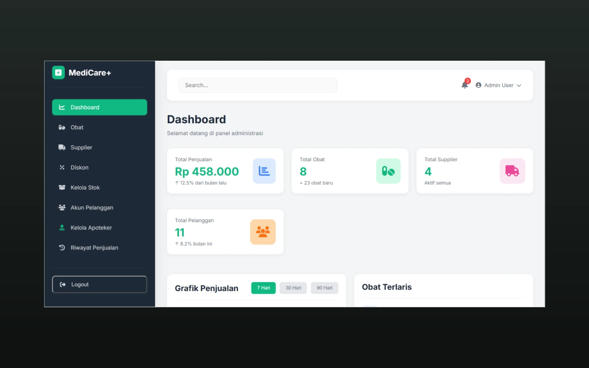

Front-End Architecture
Specialized in reactive frameworks, state handling, mobile-responsive styling, and design system implementation.
“Every Problem Is an Opportunity to Build Something better.”
Available for Front-End & Full-Stack Opportunities
D4 Teknik Informatika Politeknik Negeri Jember GPA 3.76/4.00
I’m Aditya Hari Kurniawan, a Web Developer focused on Front-End Development. I build modern, responsive, and user-friendly web experiences while exploring Machine Learning and Python to expand my technical capabilities.
With a disciplined academic background from Politeknik Negeri Jember (GPA 3.76/4.00) and hands-on industry internship experience, I focus on building performant web interfaces, scalable REST API integrations, and intuitive software tools that solve concrete real-world problems.
Specialized in reactive frameworks, state handling, mobile-responsive styling, and design system implementation.
Exploring CNN classifiers, image preprocessing, decision support systems (SAW), and computer vision pipelines.
A curated selection of 9 web applications, machine learning systems, and enterprise portals engineered with precision.

Decision Support System for facial skin care product selection combining Convolutional Neural Networks (CNN) for condition classification with Simple Additive Weighting (SAW) ranking algorithm.

Enterprise web-based ticketing platform engineered for fast incident reporting, automated technician dispatching, real-time SLA countdowns, and resolution analytics.

Real-time IoT mushroom cultivation house monitoring environment controlling temperature and humidity thresholds with automated ultrasonic misting triggering.
Comprehensive UI/UX design system and interactive high-fidelity clickable prototype for a children’s educational picture-guessing mobile puzzle game.
Intelligent precision farming web application powered by soil telemetry analysis and machine learning predictive models for harvest yield optimization.

End-to-end coffee supply chain traceability web application tracking agricultural beans from farm harvest, wet fermentation, roasting to retail shelf.

Digital presence, attorney roster directory, and integrated consultation scheduling portal engineered with sharp editorial aesthetic and responsive UI.

High-volume food & beverage point-of-sale software incorporating cash register reconciliation, raw ingredient tracking, and financial receipt printing.

Multi-role pharmacy platform combining a customer storefront, a pharmacist stock and sales desk, and an admin back office for medicines, suppliers, discounts and purchase orders.
I believe in choosing the right tool for each layer of the application. Here are the core languages, frameworks, and machine learning toolsets I use.
Engineering roles, industry internships, and client engagements — 3 entries from the journey so far.
PT Sevensoft Komputindo
Primary project: TickDesk, a web-based helpdesk and ticketing platform.
Developed frontend components, streamlined ticket workflow interactions, and integrated modular interfaces with backend APIs.
DataIns | PT Global Data Inspirasi
Automated data collection, structured datasets, and performed exploratory analysis to support reporting.
Independent Client Engagements
Delivered custom web projects for clients, from requirement discovery and frontend development to deployment.
Professional certifications and competition awards — 6 verified documents, newest first. Each certificate can be viewed and downloaded.
Cisco Networking Academy
Issued 19 October 2026
Yureka Education Center
Certificate #932718962 · Final score 90
Badan Nasional Sertifikasi Profesi (BNSP)
Certificate No. 62012 2513 6 14115 2026 · Valid until 20 April 2029
EPIM (Expo & Pekan TIK Mahasiswa) 2024
Team Bean Tech · 1 September 2024
TIF Exhibition · Politeknik Negeri Jember
Semester Genap 2023/2024 · 8 July 2024
TIF Exhibition · Politeknik Negeri Jember
Semester Ganjil 2022/2023 · 11 January 2023
Ready for new challenges
Whether you need a modern web application, front-end architecture, or collaboration on machine learning systems, my inbox is always open.